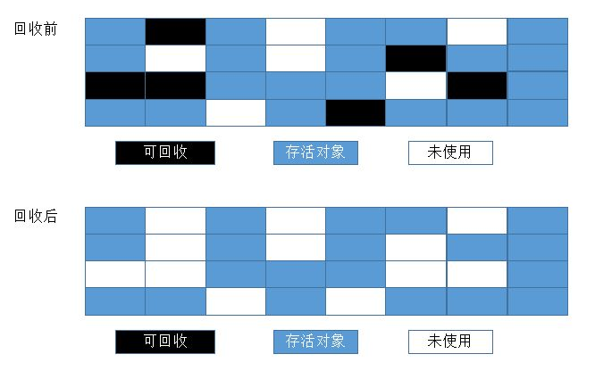

概述
在Java堆中，同一个接口中的多个实现类需要的内存是不一样的，一个方法中的多个分支需要的内存也不一样，Java程序只有在处于运行期间才能知道会创建哪些对象，这部分内存的分配和回收都是动态的，垃圾收集器所关注的是这部分内存。本文将讲述Java自动内存管理中，Java虚拟机对内存的回收机制。
判断对象能否回收
JVM虚拟机只有在对象已经“死亡”后，才会将这个对象所占用的内存回收释放，而判断对象是否“死亡”的算法有：引用计数算法和可达性分析算法。
引用计数算法
引用计数算法很通俗易懂，给每个对象添加一个应用计数器，每当有一个地方引用它的时候，计数器加一；当引用失效时，计数器减一；当对象的引用计数器为零时，证明对象已经没有任何地方引用它了，此时可以判断对象所占用的内存可回收了。
引用计数算法不能解决对象之间相互循环引用的问题；例如，对象A中引用了对象B，对象B中引用了对象A，但是对象A和对象B都没有其他引用并且对象A和B都不可被访问到了，此时，由于对象A持有B的引用，所以对象B引用计数器不为0，对象B不会被回收，而对象B持有对象A的引用，对象A的引用计数器不为0；所以对象A同样不会被回收。
可达性分析算法
在目前主流的虚拟机中，判断对象是否死亡的算法为可达性分析算法。这个算法的基本思路是通过一系列称为“GC Roots”的对象作为起点，从这些节点开始向下搜索，搜索所走过的路径称为引用链，当一个对象到“GC Roots”没有任何引用链相连时，证明此对象是不可用的，如图所示：
object5、object6、object7之间虽然互相关联，但是它们到“GC Roots”是不可达的，所以它们会被判为可回收的对象。
在Java中“GC Roots”可以是：
- 虚拟机栈中引用的对象；
- 方法区中类静态属性引用的对象；
- 方法区中常量池引用的对象；
- 本地方法栈中JNI引用的对象；
Java引用类型
强引用
Object obj = new Object()这种对象的引用为强引用，只要引用还在对象就不会被回收。
软引用
软引用对象创建：1
SoftReference<Object> sobj = new SoftReference(new Object())
对于软引用对象，在系统将要发生内存溢出时，会将这些对象回收，如果回收后内存还不够，才会抛出内存溢出异常。
弱引用
弱引用对象创建：1
WeakReference<Object> wobj = new WeakReference(new Object())
对于弱引用，当垃圾收集器工作时，被弱引用引用的对象都会被回收。
虚引用
虚引用对象创建：1
2ReferenceQueue queue = new ReferenceQueue();
PhantomReference ref = new PhantomReference(new Object(), queue);
虚引用对象的创建需要配合队列使用；
被虚引用引用的对象无法通过该引用来获取一个实例，在下一次GC时，该对象也会被回收，虚引用唯一的目的是在GC时收到一个系统通知。
垃圾回收算法
标记—清除算法
标记—清除算法如同它的名字一样，需要经过两个阶段：首先标记出所有需要回收的对象，在标记完成后统一回收所有标记的对象。

标记清除算法有两个不足：一是效率不高，二是会产生大量空间碎片。
复制算法
复制算法将可用内存分为大小相等的两块，每次只使用其中一块，当这一块内存用完了，就将存活的对象复制到另一块上，然后再将已经使用过的内存一次清理掉。
这种算法有个缺点，内存缩小为了原来的一半，这样代价太高了。现在的商用虚拟机都采用这种算法来回收新生代，不过研究表明1:1的比例非常不科学，因此新生代的内存被划分为一块较大的Eden空间和两块较小的Survivor空间，每次使用Eden和其中一块Survivor。每次回收时，将Eden和Survivor中还存活着的对象一次性复制到另外一块Survivor空间上，最后清理掉Eden和刚才用过的Survivor空间。HotSpot虚拟机默认Eden区和两块Survivor区的比例为8:1:1。
标记—整理算法
标记-整理算法过程与标记-清除算法一样，不过不是直接对可回收对象进行清理，而是让所有存活对象都向一端移动，然后直接清理掉边界以外的内存。
分代收集算法
现代商用虚拟机基本都采用分代收集算法来进行垃圾回收。大批对象死去、少量对象存活的新生代，使用复制算法，复制成本低；对象存活率高、没有额外空间进行分配担保的老年代，采用标记-清理算法或者标记-整理算法。
参考文献
《深入理解Java虚拟机:JVM高级特性与最佳实践》 周志明著
本文首发于我在万达摆地摊's blog，转载请注明来源